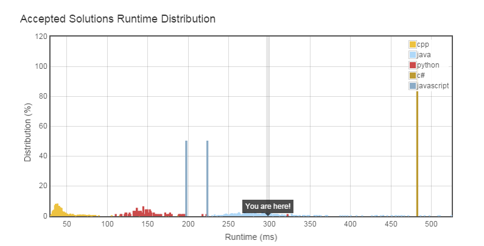

@https://leetcode.com/problems/permutations-ii/
Given a collection of numbers that might contain duplicates, return all possible unique permutations.
For example,
[1,1,2] have the following unique permutations:
[1,1,2], [1,2,1], and [2,1,1].
数组全排列问题。
我们利用递归选取数组中的数字，插入现有序列的任意位置。但是这里有重复的问题，实际上只要一个小小的改动，就可以避免，那就是在插入的时候 ， 判断这个位置是否可以插入即可，那么如何判断这个条件就成了关键的问题。
我们观察几个重复的例子： (用黑体来表示新插入的数字)
输入[1,1,2,2]
假如形成 [1,1,2] -> [1,1,2,2] or [1,1,2,2],这就重复了。
那是否相邻位置检查就可以避免重复呢？
再来看：
[1,2,1]->[1,2,1,2]
[2,1,2]->[1,2,1,2]
这里又出现了重复。实际上只需要一个改动就可以避免这种情况，那就是在插入数字的时候，只允许往“一边”插入数字。这里的一边，就是指在这个数字的左边或者右边，不能出现和他一样的数字。
下面是我的AC代码：
class Solution {
public List<Integer> tmp = new LinkedList<Integer>();
public List<List<Integer>> res = new LinkedList<List<Integer>>();
private static boolean canInsert(int number,int index,List<Integer> l)
{
if(index == 0){
return true;
}
for(int i=0;i<=index-1;i++){
if(l.get(i) == number){
return false;
}
}
return true;
}
/*
public void add()
{
List<Integer> t = new LinkedList<Integer>();
for(int x : tmp){
t.add(x);
}
res.add(t);
}
*/
private void formatList(int[] num,int size,int index)
{
if(index == size){
//add();
List<Integer> t = new LinkedList<Integer>();
t.addAll(tmp);
res.add(t);
}else{
for(int i=0;i <= tmp.size();i++){
if(canInsert(num[index],i,tmp)){
tmp.add(i,num[index]);
formatList(num,size,index+1);
tmp.remove(i);
}
}
}
}
public List<List<Integer>> permuteUnique(int[] num) {
int size = num.length;
formatList(num,size,0);
return res;
}
}
结果如下：

4/23/2015 6:38:33 PM